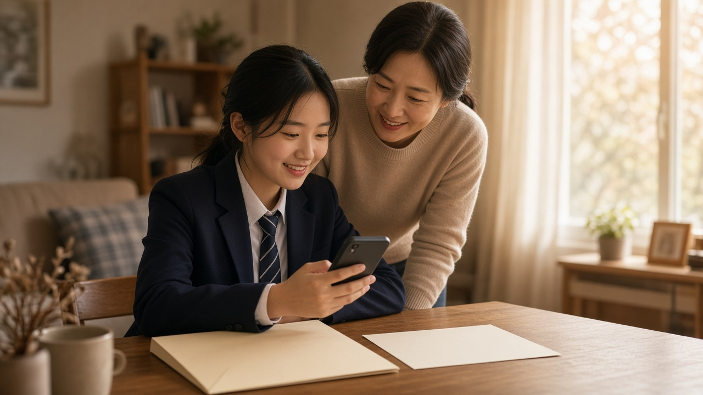
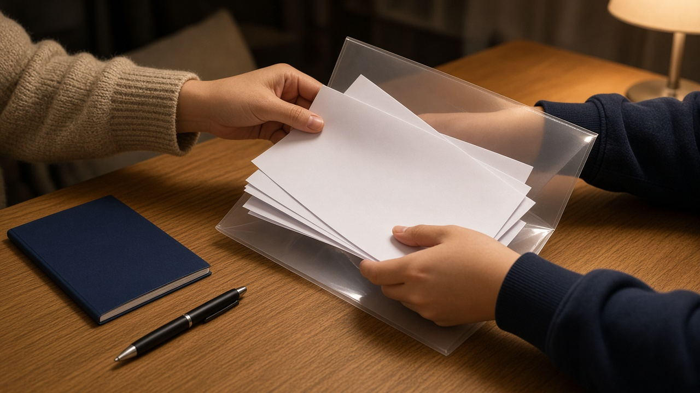

수시 최종합격으로 수능을 안 봤다면 응시수수료 60퍼센트 돌려받아요 11월 23일부터 27일까지 원서 낸 곳에서 신청하세요

수시에서 이미 최종합격 소식을 받아 이번 수능은 보지 않기로 한 수험생과 부모님 계실 거예요.
그런데 원서 접수 때 낸 응시수수료는 그냥 사라지는 게 아니라, 조건만 맞으면 일부를 돌려받을 수 있어요.
2027학년도 수능은 11월 19일 목요일에 치러지고, 환불 신청은 시험이 끝난 뒤 짧은 기간에만 받아요.
오늘은 누가 환불 대상인지, 얼마를 돌려받는지, 언제 어디서 신청하는지 한국교육과정평가원 시행세부계획을 기준으로 정리해 볼게요.
시험 당일 한 과목도 응시하지 않은 경우만 대상이에요
환불을 받으려면 정해진 사유 때문에 시험 당일 단 한 영역도 응시하지 못했어야 해요.
평가원이 정한 사유는 천재지변, 질병, 수시모집 최종합격, 군입대, 사망, 그리고 자퇴나 퇴학, 휴학 같은 자격상실 이렇게 여섯 가지예요.
여기서 가장 많이 헷갈리는 부분이 있어요. 한 영역이라도 답안지를 냈다면 환불을 신청할 수 없고, 아무것도 쓰지 않은 백지 답안지를 낸 경우도 마찬가지예요.
그러니 수시 합격 뒤 분위기만 보러 1교시에 들어갔다가 나오는 건 환불을 포기하는 것과 같다는 점을 꼭 알아 두세요.
돌려받는 금액은 낸 수수료의 60퍼센트예요
환불 기준은 납부한 응시수수료의 60퍼센트예요. 전액이 아니라는 점은 미리 알고 계시는 게 좋아요.
올해 응시수수료는 선택한 영역 수에 따라 4개 영역 이하 3만 7천 원, 5개 영역 4만 2천 원, 6개 영역 4만 7천 원이었어요.
이를 60퍼센트로 계산하면 4개 영역 이하는 2만 2천2백 원, 5개 영역은 2만 5천2백 원, 6개 영역은 2만 8천2백 원을 돌려받는 셈이에요.
금액이 아주 크지는 않지만 신청 기간만 지키면 받을 수 있는 돈이니 놓치지 않는 게 좋겠죠.
참고로 저소득층 수급 자격으로 처음부터 응시수수료를 면제받았다면 낸 돈이 없으니 환불 대상이 아니에요.
신청은 11월 23일부터 27일까지 평일 낮에만 받아요
신청 기간은 11월 23일 월요일부터 11월 27일 금요일까지 5일간이고, 시간은 오전 9시부터 오후 5시까지예요.
저녁이나 주말에는 받지 않으니 학교 일정이나 부모님 출근 시간을 고려해 미리 날짜를 정해 두세요.
기간이 시험 바로 다음 주 한 주뿐이라, 수시 합격자 발표가 끝나고 마음이 풀린 사이에 지나가 버리기 쉬워요.
이 기간이 지나면 신청할 수 있는 다른 창구는 안내되어 있지 않으니 달력에 꼭 표시해 두시길 권해요.

원서를 접수한 곳에 환불신청서와 증빙서류를 내요
신청 장소는 응시원서를 접수한 곳이에요. 재학생이라면 대개 다니는 학교, 졸업생이라면 원서를 낸 출신 고교나 시험지구 교육청이 되겠죠.
제출 서류는 환불신청서와 사유를 보여 주는 증빙서류 각 1부예요. 환불신청서는 원서접수처에 비치되어 있어요.
수시 최종합격이라면 합격을 확인할 수 있는 서류, 질병이라면 진단서처럼 사유에 맞는 증빙을 준비하시면 돼요. 구체적인 서류 종류는 접수처나 평가원 누리집에서 한 번 더 확인하는 게 안전해요.
환불금은 12월 24일 목요일까지 신청한 계좌로 들어오고, 계좌는 본인이나 직계가족, 배우자 명의여야 해요.
신청 전에 이것만 확인해 보세요
먼저 시험 당일 어떤 답안지도 내지 않았는지 확인해 보세요. 이게 가장 기본 조건이에요.
다음으로 내가 원서를 어디서 접수했는지, 그곳이 평일 낮에 방문 가능한지 챙겨 보세요.
마지막으로 사유를 보여 줄 증빙서류와 환불받을 계좌 정보를 함께 준비해 가면 한 번에 끝낼 수 있어요.
오늘 내용은 11월 5일 기준 한국교육과정평가원의 2027학년도 수능 시행세부계획을 정리한 일반 정보예요. 세부 절차는 바뀔 수 있으니 신청 전에 평가원 누리집이나 원서접수처에 꼭 확인해 주세요.
참고 자료 한국교육과정평가원 2027학년도 대학수학능력시험 시행세부계획 실시요강 응시수수료 환불 항목, 한국교육과정평가원 수능 누리집 2027학년도 주요 일정, 강원특별자치도교육청 2027학년도 수능 시행세부계획 공지
태그 수능응시수수료환불 수능환불 수능응시료 2027수능 수시최종합격 수능결시 응시수수료 한국교육과정평가원 수능일정 대입정보